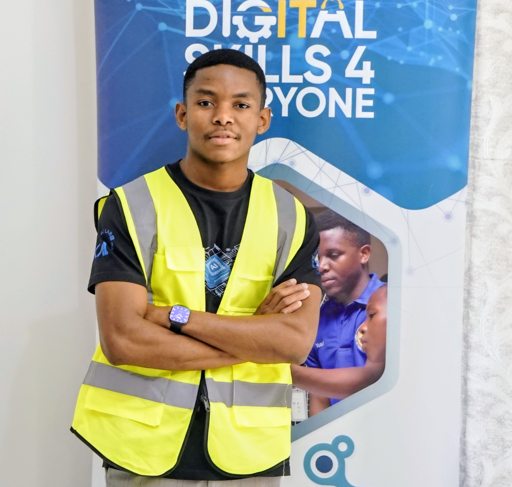

Electrical & Computer Engineer based in Blantyre
Welcome to my digital space! I am a Computer Engineer specialising in systems development, web design, and full-stack engineering. My passion lies in bridging the gap between complex backend architectures and intuitive frontend interfaces to build scalable, reliable digital solutions from the ground up.
Technically, I handle everything from database systems development to responsive web design. I write clean, optimised code to create high-performance applications that look seamless and run efficiently. My engineering approach combines technical precision with creative design to ensure maximum reliability under the hood.
Beyond writing code, I excel at translating complex requirements into structured technical systems. I am a collaborative problem-solver driven by a love for innovation, always exploring emerging web standards and design methodologies to engineer smarter, faster, and more secure digital ecosystems.
Core Technologies & Skills
- Embedded C/C++
- Microcontrollers
- Matlab
- JavaScript
- HTML
- CSS
- Next.JS
- PostgreSQL